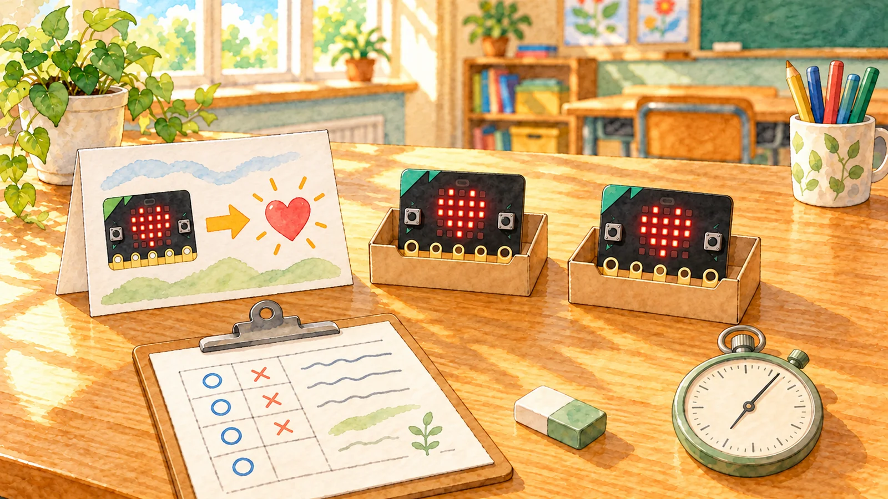
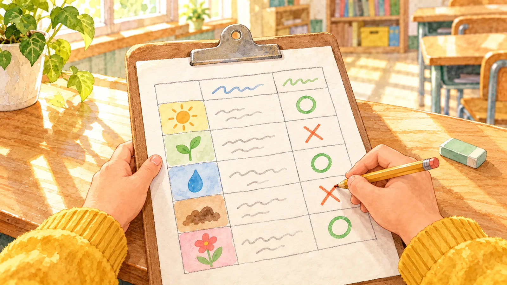
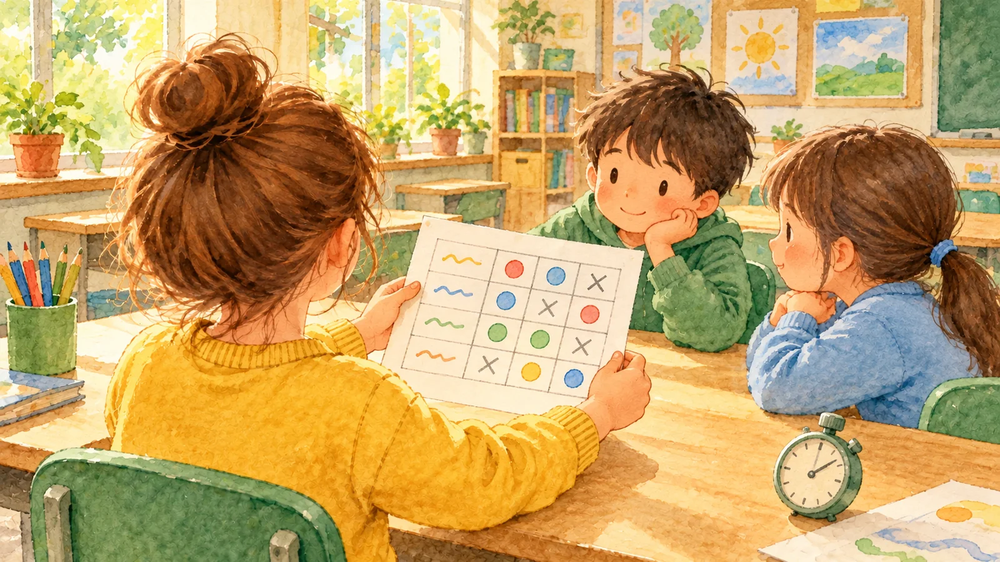

다 펼쳐 세어 보고 고칠 점을 골라요 · 체험 활동
기록 두 장만 보여요. 가장 자주 막힌 곳을 하나 누르고, 나머지 펼치기를 눌러요.
| 친구 | 결과 | 걸린 시간 | 막힌 곳(잠깐 멈춘 곳도) |
|---|
두 장만 보고, 가장 자주 막힌 곳은?
한 곳을 짚어야 펼칠 수 있어요
1분 말하기 문장

성공한 친구도 잠깐 막힌 곳을 적어요. 연습용 기록이에요. 우리 기록지는 종이에 있어요.

같은 부스를 두고 두 친구가 말해요. 고칠 점의 근거로 쓸 말을 눌러요.

기록 여섯 줄에서 막힌 횟수를 세어요. 칩을 누르고 놓을 칸의 단추를 눌러요. 6명 중 2번 이상이면 많이 막힘, 안내만 고치면 쉬움, 코드를 고쳐야 하면 어려움이에요.
먼저 고칠 점 한 가지는?
기록지 맨 아래 칸에
그림 일부는 생성형 AI로 만들었어요